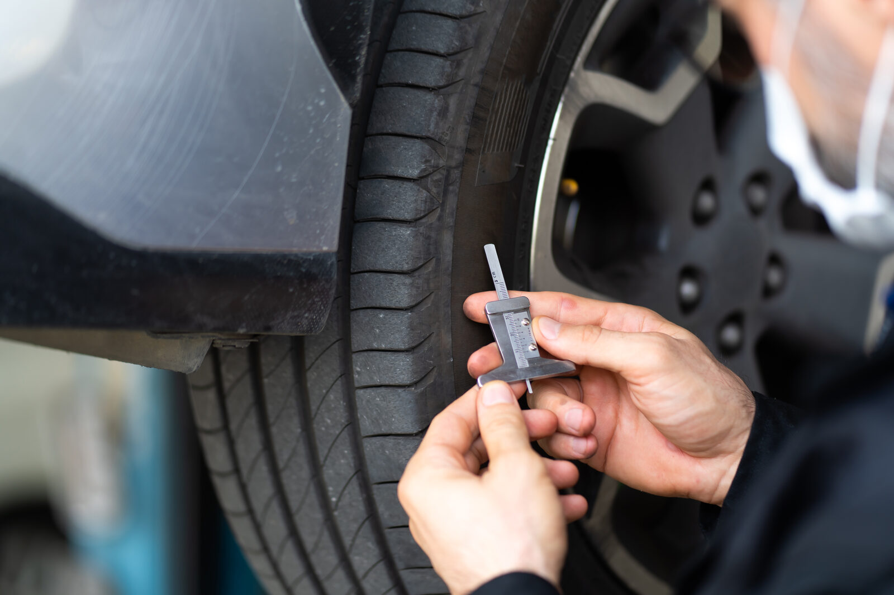

Home / Blog / Tire Pull Points
CASING GUIDEThe legal tread-depth minimum is not the right time to pull a tire for retreading. What the published guidance says about pull points, why thin tread damages casings, and how to set a pull-point policy.
Published October 7, 2026 · Good Hope Retreaders

A drive tire is legal until its tread is down to 2/32 of an inch. That does not make 2/32 the right moment to take it off the truck. The depth at which you pull a tire decides whether the casing underneath is still a good candidate for a second life, and a casing that gets scrapped for damage is a retread you never get to buy.
This guide covers what the federal rule requires, what trade coverage reports about pulling tires earlier, why thin tread puts the casing at risk, and how to write a pull-point policy. It matters most to a fleet that controls its own retread line, because the tire pull decision and the retread decision then sit under one roof.
In the United States, 49 CFR 393.75 sets the minimum tread groove depth for trucks, buses and truck tractors. Tires on the front wheels need at least 4/32 of an inch in a major tread groove. Other tires need at least 2/32 of an inch. Those are minimums for staying on the road legally. They are not retreading guidance. If you operate in Canada, check the tread-depth requirements that apply in your own province and jurisdiction; this post does not summarise them.
Trade coverage of the Tire Retread & Repair Information Bureau (TRIB) reports that industry experts advise pulling tires for retreading at around 6/32 of an inch rather than waiting for 4/32 or less, and that doing so can maximise casing life. The same coverage reports that most major tire companies agree the smartest way to improve casing retreadability is to pull the worn tire before the casing is damaged, and that this is cheaper for the fleet than waiting until the last minute.
Other trade coverage gives specific pull points of about 6/32 for steer tires and 8/32 for drive tires, and notes that a pure line-haul fleet may find 6/32 works well while a mixed-service fleet might pull selected casings at 8/32 because of the damage the original tread picks up in that kind of work. Treat these as published rules of thumb, not a standard. Nobody publishes a single required number, and the right one depends on your application.
The reasoning reported in the trade press is mechanical. When there is very little tread left, there is little rubber to keep stones from working through to the steel belt area, so cuts, stone penetration and punctures reach the casing itself. Casing damage from those causes is reported to happen much more often on tires run down to thin tread, and damage that reaches the belts can end a casing's retreadability. Every casing lost this way is value you cannot recover through retreading.
There is a real trade-off here, and it is worth being honest about it. Pulling earlier gives up some tread that was still usable. The published argument is that what you give up is outweighed by the casing you protect. We have not found a published dollar figure that applies to every fleet, so we are not going to invent one. Test it against your own casing scrap and acceptance data.
Trade coverage also stresses that fleets should have a written policy covering their tires and retreading. A pull-point policy does not have to be elaborate. These are the elements worth deciding in writing:
When a third party retreads your casings, you usually learn about casing damage after the fact, through a rejection report on the plant's terms. When you run your own line, you see every rejected casing and the reason, and you can adjust the pull point yourself. That feedback is one of the practical benefits of owning the process. The trade-off is that you also own the inspection standard, so the inspection step has to be rigorous. See our 5-point casing check and our guide to casing salvage rate as a KPI.
Pull point is also tied to pressure discipline, because an under-inflated tire damages the casing regardless of tread depth. See underinflation and your casings and our piece on casing age limits.
Good Hope is a manufacturer-direct supplier of retreading equipment, consumables, components and repair tools, with local service in Ontario. We do not run retread shops for customers. We supply the equipment that sits behind these decisions, such as our tire inspection spreader and repair tools, so a fleet that retreads for itself can inspect and repair casings properly.
We supply inspection spreaders, repair tools and retreading consumables from our Ontario warehouse, with transparent all-in Canadian pricing. Tell us your volume and tire sizes and we will help you spec the right equipment.
Get an equipment quote →Send us your requirements and we'll get back to you within 24 hours with pricing and lead times — no obligation.